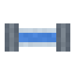
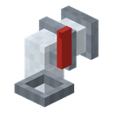
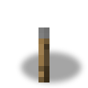
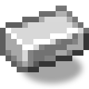

Tap
alaindustrial:fluid_tap
Summary
The Tap lets fluid out of a tank, a pump, a machine, the Electric Mob Trap or the end of a fluid pipe, back into the world. Any fluid works: water, lava, oil and the mod's other fluids, liquid experience, and fluids of other mods. It is a fitting in the style of the fluid pipes: a glass tube, a glass elbow, a tube down with steel flanges and a red lever on the side. The fluid itself shows through the glass, with its colour and its level. It takes no energy: the tap is just a valve.
Quick example: screw the tap onto a tank of water and right-click it. The lever turns and a water block appears under the nozzle. Under a mob trap the tap gives liquid experience back as orbs that fly to the player.
How to place it
The tap points its nozzle away from what it is fixed to. The face it is screwed onto is its intake.
| Where you click | Form | What it looks like |
|---|---|---|
| A side face of a block (tank, pump, pipe) | wall | the tube leaves the source horizontally, an elbow, a tube down, the nozzle at the bottom of the cell |
| The underside of a block (under the trap, under a tank) | ceiling | the tube comes down from above, the elbow turns toward the player, the nozzle sits on the front edge of the cell |
| The floor | wall | nozzle toward the player, intake at the back |
In the ceiling form the fluid and the orbs come out in front of the tap, not back under the trap, whose reach would pull them in again.
Where it takes fluid from
Only through the intake face. The other five faces neither take nor give fluid.
- A tank, a pump, a machine, the mob trap (any block holding a fluid, of this mod or another, except a fluid pipe). The tap draws a little from it into its own buffer, up to 200 mB a tick, while the buffer has room. It does this while closed too, so the glass shows which fluid is behind it. Liquid experience is drawn in whole points only (multiples of 20 mB): less than a point stays in the source.
- A fluid pipe of the mod. The pipe connects to the intake face by itself and fills the tap, no wrench needed: the tap only takes and gives nothing back, so to the pipe it is a sink. The tap never drains the pipe: its fluid belongs to its network.
- One fluid at a time. While the buffer holds water, lava from the source waits. Another fluid gets in once the buffer is empty.
The tap's buffer holds 1000 mB, one bucket.
How it lets fluid out
Right-click opens and closes the tap; the lever shows which. A redstone signal holds the tap open too, even if a click closed it. It is open when opened by hand or when it has a signal.
An open tap lets the fluid out through the nozzle, into the cell it points at: under the nozzle for the wall form, in front of the tap for the ceiling form.
| What is in the tap | What the open tap does |
|---|---|
Liquid experience (tag c:experience) | every 10 ticks one vanilla experience orb of up to 5 points, while a player is within 8 blocks of the nozzle |
| A fluid with a block and a bucket (water, lava, oil and so on), a tank or other holder under the nozzle | pours into it, up to 200 mB a tick |
| The same fluid, nothing under the nozzle | places one source block, at most once every 20 ticks, once the tap and the source behind it hold a bucket (1000 mB) |
| A fluid with no block in the world (steam) | does not pour it; on opening, the line "This fluid cannot be poured out" above the hotbar |
- The block goes in the way a dispenser empties a bucket, by vanilla's rules: water evaporates in the Nether (the bucket is spent, as for a player), a block that can hold water (a slab, a fence) fills with it. An occupied cell the tap leaves alone: it waits and spends nothing. The same for a cell that already holds a source of that fluid.
- The experience rate is one: 20 mB = 1 point, the same the trap makes its liquid at. A remainder below a point waits for the next fill and is never rounded up into a point. The orbs are vanilla ones, with the pickup chime and with Mending.
- An open tap with no player near pours no orbs: an orb on the ground despawns after five minutes. A spectator does not count as a player.
- A closed tap lets nothing out and keeps its buffer.
Block properties
Model: variant 2 "pipe-style fitting" (the owner's choice, 2026-10-21), generator tools/model_sources/fluid_tap/build_fluid_tap.py. The tubes have the cross-section of the mod's fluid pipes: a 4×4 px glass tube and 6×6 px steel ring flanges, so a pipe at the intake continues into the tap without a step.
| What | Value |
|---|---|
| Shape | not a full cube: 6×6 px tubes. Wall: a horizontal tube 6×6×11 px at height 5–11 px and a drop 6×4×6 px to the nozzle; ceiling: a drop 6×11×6 px from the top and an outlet 6×6×5 px to the front edge |
| Collision and outline | the same tubes, boxes assembled once per form and facing |
| Occlusion | : neighbours keep their faces, light passes |
| Hardness | 1.5 / 6.0, copper sound; tool: pickaxe |
| States | facing (4 sides), ceiling (form), open (opened by hand or by redstone, turns the lever) |
| Rendering | the block model and a fluid renderer: the fluid behind the glass is drawn with its own texture and colour, by the buffer's level; the client gets it at once on a change of fluid and at most every 10 ticks on a change of level |
| Item | the empty glass fitting, no fluid |
| Sound | no sounds of its own; a block from a bucket sounds like a bucket, the orbs chime when picked up |
| Drop | the tap itself; liquid experience in the buffer drops as orbs when it is broken (less than a point is lost), any other fluid is lost |
Recipe
Crafting table 3×3: three fluid pipes in an elbow, a lever and an iron ingot (the nozzle).
[Fluid Pipe] [Fluid Pipe] [Lever]
[ ] [Fluid Pipe] [ ]
[ ] [Iron Ingot] [ ]Progression
You need it whenever a fluid has to go back into the world: draining a tank of water or lava, pouring oil into a tank below, giving the player the experience from the Electric Mob Trap (mobs, liquid experience, tap, orbs to the player). Depositing your own experience into a tank (an "experience bank") will be a separate task.
Related
- Electric Mob Trap: the source of liquid experience.
- Fluid Pipe: feeds fluid into the tap.
- Task : decisions and research.
Crafting
Shaped Crafting


▶
Tap